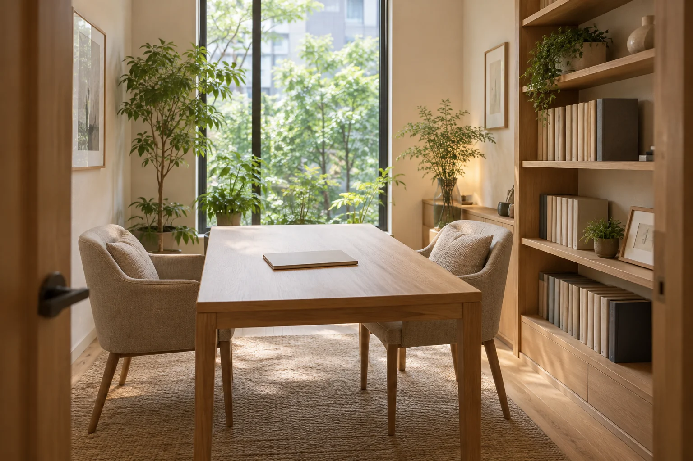

家族の手続きと、建設業の仕事に。
書類の先に、
進みたい道がある。
大切な方が亡くなった後の書類。
建設工事を請け負うための許可。
いまの状況を整理し、必要な準備と
次にすることを、一緒に確かめます。
PAPERWORK, WITH A WAY FORWARD.
いま、気になっているのは
どちらのことですか。
手続きの名前を知らなくても、ここから探せます。
誰が、何を受け継ぐのか。
書類を整理したい。
相続の調査・書類作成、遺言の準備
※ 相続：亡くなった方の財産や借金などを受け継ぐこと。遺言：亡くなった後の財産の渡し方などについて、法律で定められた形式で意思を残すこと。
許可を取りたい。
更新や届出を進めたい。
建設業許可の申請・取得後の手続き
※ 建設業許可：一定の建設工事を請け負うために必要な、行政の許可。すべての工事で必要になるわけではありません。
以下は、実際の制度・業務をもとに構成した架空の事務所のサービス案内です。
何を集めるか。
誰と確かめるか。
そこから、順番に。
「家族が亡くなったけれど、何から始めればよいか」。受け継ぐ人と財産を調べ、必要な書類を整えるお手伝いをします。
※ 相続：亡くなった方の財産や借金などを受け継ぐこと。
どこまで、お願いできますか。
- 01
受け継ぐ人を
確かめる家族関係が複雑で、誰の書類が必要か分からないときに。
戸籍を集めて、相続人を調べます。確認できた家族関係を図に整理し、手続きに関わる人を見えるようにします。
※ 戸籍：出生・結婚など、身分や親族関係を記録した公的な書類。
※ 相続人：法律上、財産を受け継ぐ立場にある人。整理するもの関係者の一覧・家族関係の図
- 02
財産と借入れを
一覧にする預金や家の資料が、あちこちに分かれているときに。
銀行の資料や土地・建物の資料などから、財産の内容を調べます。借入れなども確認し、分かっていることと追加で確認することを分けます。
※ 財産目録：預貯金・不動産・借入金などをまとめた一覧。調査で確認できた内容を記載します。
整理するもの財産目録・追加確認が必要な項目
- 03
決まった分け方を
書類にする受け継ぐ人全員で、分け方に合意できているときに。
合意した内容を確認し、遺産分割協議書を作成します。話し合いの結論を、後の手続きで使える書類に整える業務です。
※ 遺産分割協議書：受け継ぐ人全員が合意した、財産の分け方を記す書類。意見の対立を解決したり、交渉を代わったりする業務は含みません。
作成するもの合意内容を記載した書類
別の専門家が担当すること
次の業務は当事務所で代行せず、内容に合う相談先をご案内します。
- 分け方をめぐる争い・交渉
- 弁護士へ
- 相続登記※ 土地・建物の所有者の記録を、受け継いだ人へ変更する手続き。
- 司法書士などへ
- 相続税の申告・税額の相談※ 相続税：受け継いだ財産などに応じてかかる税金。申告では、財産や税額などを税務署に届け出ます。
- 税理士へ
業務範囲の確認先：日本行政書士会連合会「遺言・相続」 ↗
相続の相談で、最初に伺うこと
まずは、この3つから。
- 亡くなった時期と、ご本人との関係
- 分かっている財産・借入れのこと
- 遺言書の有無と、いま困っていること
新しく書類を集める前でも大丈夫です。手元にある資料から確認します。借入れや手続きの期限が気になる場合は、最初にお伝えください。
取りたい許可と、
今ある資料。
間にある準備を明確に。
初めての申請も、許可を取った後も。工事の内容と現在の体制を伺い、条件の確認から書類の作成・申請まで支援します。
※ 建設業許可：一定の建設工事を請け負うために必要な、行政の許可。工事の種類や金額などによって要否が変わります。
※ 申請：許可などを求める手続き。届出：変更などの事実を行政に知らせる手続き。
いまの状況から、選べます。
- 01
初めて
許可を取りたい取引先から許可について確認された。仕事の幅を広げたい。
工事の内容を伺い、必要な許可の種類と許可要件を確認します。経営の経験、営業所技術者等の資格や経験、資金、社会保険の加入状況などを資料で確認。申請書類を作成し、ご本人に代わって提出します。
※ 許可要件：許可を受けるために満たす条件。
※ 営業所技術者等：工事の契約などを行う拠点に置く、資格や経験などの条件を満たす技術者。
※ 社会保険：ここでは健康保険・厚生年金保険・雇用保険。加入の対象かどうかも確認します。まず整理するもの現在の条件・足りない証明資料・申請の段取り
- 02
許可を更新したい。
工事の種類を増やしたい。有効期限が近い。新しい種類の工事にも対応したい。
今の許可の内容と期限を確認し、更新に必要な書類を整えます。別の種類の工事にも許可が必要な場合は、追加する条件を確認して申請を支援します。
※ 更新：有効期間の後も許可を続けるための手続き。
※ 業種追加：今の許可に、別の工事の種類を加える手続き。まず確認するもの許可の通知書・これまでに提出した書類
- 03
毎年の報告や、
変更の届出をしたい決算が終わった。役員や事業所の所在地が変わった。※ 決算：一定期間の売上・費用・財産の状態などをまとめること。
決算変更届の作成・提出を支援します。所在地や役員などに変更があった場合も、何をいつまでに届け出るかを確認し、必要な書類を整えます。
※ 決算変更届：1年ごとの工事実績や収支や財産の状況などを、許可を出した行政に報告する届出。税務署への税の申告とは別の手続きです。
整理するもの届出の種類・期限・提出する書類
建設業の相談で、最初に伺うこと
書類の名前より、
仕事の内容から。
- いま行っている工事と、今後請けたい工事
- 現在の許可の有無と、希望する時期
- 経営や工事の経験、資格が分かる資料の有無
資料を全部そろえる必要はありません。今あるものを確認してから、追加で必要な証明資料をご案内します。許可を出すかどうかは行政が審査するため、取得をお約束するものではありません。
依頼する前に、
見通しをそろえる。
相続も、建設業の許可も。最初にお話を伺い、対応できる範囲を確かめます。
- STEP 01まだ未定でも大丈夫
状況と、気になる時期を伺う
何に困っているか、いつまでに進めたいかを確認します。期限があるものと、追加で調べることを分けます。
- STEP 02依頼前に内容を確認
業務の範囲と、見積りを確認する
お任せいただくこと、ご本人にお願いすること、費用の内訳と時期の見通しをお伝えします。
- STEP 03次の作業を共有
合意してから、書類の準備へ
ご依頼後、必要な調査や書類作成を進めます。内容を確認いただきながら、提出が必要なものはその手続きまで支援します。
仕事への費用と、
手続きにかかる費用。
見積りでは、この2つを分けてお伝えします。
追加の作業が必要になった場合も、
内容と費用を確認してから進めます。
このデモでは架空の料金を設定せず、見積りで確認する項目を紹介しています。
費用の内訳
- 報酬
- 調査・書類作成・申請の代理など、行政書士の仕事に対してお支払いいただく費用。
- 実費
- 証明書の取得費、郵送料、行政に納める申請手数料など。必要なものを分けて記載します。
見積額が変わる主な条件
- 相続の書類
- 調べる家族関係、財産の種類、集める書類、依頼する作業の範囲。
- 建設業の許可
- 初めての取得か更新かなどの申請の種類、許可が必要な工事の種類、経験などを証明する資料の状況。
別の専門家への依頼が必要な場合、その費用が含まれるかも確認します。
気になることを、
先に確かめる。
Q. 書類を全部集めてから相談するのですか。
手元にあるものから始める流れです。相談内容によって必要な書類は変わるので、新しく証明書を取り寄せる前に確認します。内容や時期が未定の項目は、そのままお伝えください。
Q. 家族に借金があったかもしれません。
受け継ぐものには借金なども含まれます。相続放棄（家庭裁判所で、財産も借金も受け継がないために行う手続き）を検討する場合には期限があるため、書類の整理を待たずに、裁判所や弁護士などへ早めに確認してください。当事務所で裁判所への手続きを代行することはありません。裁判所の案内を見る ↗
Q. 工事の金額だけで、許可が必要か分かりますか。
金額だけでは判断できません。軽微な建設工事（法律上、建設業許可がなくても請け負える範囲の工事）だけを扱う場合は例外ですが、その範囲は工事の種類によって異なります。工事の内容、税込みの金額、発注者が用意する材料などを確認します。国土交通省で条件を確認する ↗
Q. この事務所へ、実際に依頼できますか。
「紙と道 行政書士事務所」は架空の事業者で、実際の業務は受け付けていません。このように専門的なサービスを分かりやすく伝えるサイトの制作は、國分Web製作所へご相談ください。
掲載内容の確認先 公的機関・職能団体の資料
業務と制度は以下の資料を確認し、相談者が判断する順序に合わせて独自に構成・執筆しています。確認日：2026年9月26日。個別の必要書類・条件は申請先や状況により異なります。

この案内は、國分Web製作所の制作デモです。
専門的な仕事に、
わかる入口を。
知りたい順に、情報を並べる。
専門用語は、意味がその場でわかるように。
あなたの仕事も、相談する人の視点から
言葉と構成を整えます。